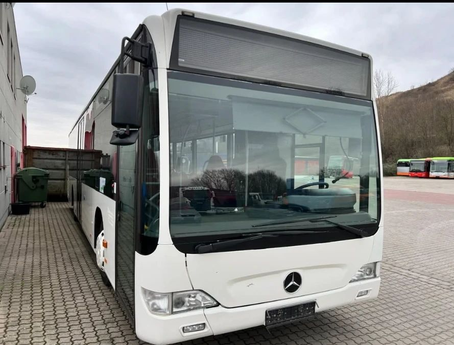
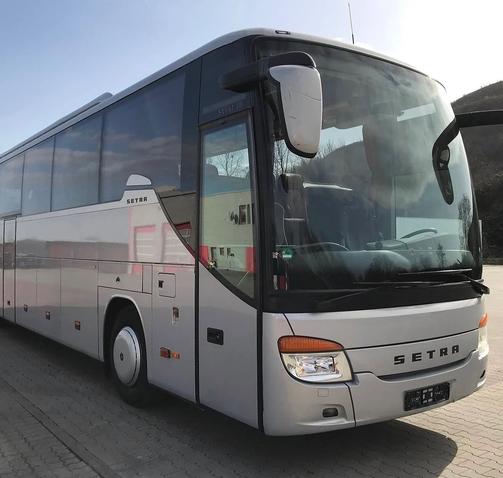

Morgens bringt ein Stadtbus die Leute zur Arbeit, mittags fährt ein Überlandbus die Schüler in die Dörfer, und am Wochenende startet ein Reisebus zur Städtetour. Von außen sehen sie sich oft ähnlich: weiß, zwölf Meter lang, eine große Frontscheibe. Gebaut sind sie aber für völlig verschiedene Aufgaben.
Wir kaufen alle drei Bustypen an und sehen jede Woche, wie unterschiedlich sie sind. In diesem Beitrag erklären wir, woran Sie einen Linienbus, einen Überlandbus und einen Reisebus erkennen und warum das beim Verkauf eine Rolle spielt.
Drei Klassen nach UN-Regelung 107
Für die Unterscheidung gibt es eine offizielle Grundlage. Die UN-Regelung Nr. 107 teilt Busse mit mehr als 22 Fahrgästen in drei Klassen ein:
- Klasse I: Busse mit Stehplätzen für häufigen Fahrgastwechsel. Das ist der Stadtbus.
- Klasse II: Busse vor allem für sitzende Fahrgäste. Stehen ist nur im Gang oder auf einer kleinen Fläche erlaubt. Das ist der typische Überlandbus.
- Klasse III: Busse nur für sitzende Fahrgäste. Das ist der Reisebus.
Ein Bus kann auch für zwei Klassen zugelassen sein. Welche Klasse Ihr Fahrzeug hat, steht in den Zulassungspapieren.
Der Linienbus für die Stadt
Ein Stadtbus hält alle paar hundert Meter. Deshalb ist bei ihm alles auf schnelles Ein- und Aussteigen ausgelegt:
- Niederflur: Der Boden liegt so tief, dass man an allen Türen ohne Stufe einsteigt. Für Rollstühle und Kinderwagen gibt es eine Rampe.
- Viele breite Türen: beim Solobus meist zwei oder drei, beim Gelenkbus drei oder vier.
- Wenige Sitze, viel Platz zum Stehen: Ein Gelenkbus ist meist für mehr Stehplätze als Sitzplätze zugelassen.
- Kein Gepäckraum: Unter dem tiefen Boden bleibt dafür kein Platz.
Den Linienbus gibt es in mehreren Längen. Der Solobus ist meist rund zwölf Meter lang. Mit drei Achsen dürfen Busse in Deutschland bis 15 Meter lang sein, Gelenkbusse bis 18,75 Meter (§ 32 StVZO). Bekannte Modelle sind etwa der Mercedes-Benz Citaro, der MAN Lion's City und der Solaris Urbino.

Der Überlandbus für die Region
Der Überlandbus fährt längere Strecken zwischen Orten, oft im Schülerverkehr. Die Haltestellen liegen weiter auseinander, die Fahrgäste sitzen länger. Deshalb hat er mehr Sitze, oft mit Sicherheitsgurten, und weniger Fläche zum Stehen. Oft gibt es einen kleinen Gepäckraum.
Beim Boden gibt es zwei Bauarten:
- Hochboden: Man steigt über Stufen ein, darunter ist Platz für Gepäck. Beispiele sind der Mercedes-Benz Intouro und der Iveco Crossway.
- Low Entry: Vorne und in der Mitte liegt der Boden tief wie beim Stadtbus, hinten steigt er an, weil dort Motor und Getriebe sitzen. So kommen auch Rollstuhlfahrer leicht in den Bus, und hinten bleibt Platz für mehr Sitze.
Wichtig ist das Thema Tempo. Wenn kein Sitzplatz mehr frei ist und Fahrgäste stehen, darf ein Bus auch außerorts nur 60 km/h fahren (§ 3 Abs. 3 StVO). Wenn alle sitzen, gelten die normalen Grenzen für Busse: außerorts 80 km/h, auf der Autobahn mit Tempo-100-Zulassung 100 km/h (§ 18 Abs. 5 StVO).
Der Reisebus für lange Strecken
Beim Reisebus ist alles auf Komfort über viele Stunden ausgelegt. Stehplätze gibt es keine. Jeder Fahrgast hat einen eigenen Sitz, bei neueren Bussen mit Gurt, oft auch mit Fußstütze und Leselampe.
- Hoher Boden: Die Fahrgäste sitzen über einem großen Gepäckraum. Je nach Höhe spricht man von Hochdecker oder Superhochdecker.
- Ausstattung an Bord: WC, Bordküche, Kühlschrank, Bildschirme und eine starke Klimaanlage gehören bei vielen Reisebussen dazu.
- Wenige Türen: meist eine vorne und eine in der Mitte oder hinten.
- Größere Motoren: Ein voll beladener Reisebus fährt oft lange Strecken auf der Autobahn. Die meisten Reisebusse haben die Tempo-100-Zulassung.
Für besonders viele Sitzplätze gibt es Doppeldecker mit zwei Fahrgastebenen. Bekannte Reisebusse sind etwa die Setra ComfortClass und TopClass, der Mercedes-Benz Tourismo und die Neoplan-Modelle.

Und der Kleinbus?
Bis 22 Fahrgäste gelten andere Klassen. Kleinbusse wie der Mercedes-Benz Sprinter werden für Shuttle, Rufbus und Vereinsfahrten eingesetzt. Was einen Kleinbus ausmacht und welcher Führerschein nötig ist, erklären wir im Beitrag über den Mercedes-Benz Sprinter 519 als Bus.
Was alle drei gemeinsam haben
Für jeden großen Bus brauchen Sie den Führerschein der Klasse D. Wer Fahrgäste gewerblich befördert, braucht außerdem die Berufskraftfahrerqualifikation. Busse sind in Deutschland von der Lkw-Maut befreit, egal welcher Typ.
Warum so viele Stadtbusse auf den Gebrauchtmarkt kommen
Seit August 2021 gilt in Deutschland das Saubere-Fahrzeuge-Beschaffungs-Gesetz. Es schreibt öffentlichen Auftraggebern vor, wie viele saubere Busse sie neu beschaffen müssen. Bis Ende 2025 waren es 45 Prozent, von 2026 bis 2030 sind es 65 Prozent. Die Hälfte davon muss jeweils emissionsfrei sein, also zum Beispiel ein Elektrobus (§ 6 SaubFahrzeugBeschG).
Die Quote gilt für Stadtbusse der Klasse I und kleinere Busse mit Stehplätzen. Reisebusse und die meisten Überlandbusse sind ausgenommen (§ 4 SaubFahrzeugBeschG). Für Verkehrsbetriebe heißt das: Wenn ein Verkehrsvertrag neu vergeben wird oder neue Elektrobusse kommen, werden oft viele Dieselbusse auf einmal ausgemustert. Sie sind dann nicht am Ende, sondern fahren an anderer Stelle weiter, etwa im Werksverkehr oder bei kleineren Busunternehmen.
Was den Wert eines gebrauchten Busses bestimmt
Für alle drei Typen zählen Baujahr, Laufleistung, Euro-Norm und Wartungshistorie. Dazu kommen je nach Bustyp eigene Punkte:
- Linienbus: Länge, Anzahl und Lage der Türen, Rampe, Klimaanlage im Fahrgastraum, Fahrgastinformation
- Überlandbus: Sitzplatzzahl, Gurte, Gepäckraum, Low Entry oder Hochboden, Tempo-100-Zulassung
- Reisebus: Sitzplatzzahl und Sitzabstand, WC, Bordküche, Bildschirme, Polster und Innenraum, Tempo-100-Zulassung
Je genauer Sie diese Angaben machen, desto genauer kann ein Angebot ausfallen.
Wir kaufen Busse jeder Bauart an
Wir bringen über 30 Jahre Erfahrung im Fahrzeughandel mit und kaufen Stadtbusse, Gelenkbusse, Überlandbusse, Reisebusse und Kleinbusse an, einzeln oder als ganze Serie. Mehr dazu finden Sie auf unseren Seiten Linienbus verkaufen und Reisebus verkaufen. Wenn Sie viele Busse auf einmal abgeben, lesen Sie unseren Beitrag über den Verkauf einer ganzen Flotte.
- Sie schicken uns die Daten Ihrer Busse, bei einer Serie gern als Liste, dazu einige Fotos.
- Wir bewerten jeden Bus und klären offene Fragen am Telefon.
- Sie bekommen ein Angebot je Bus oder für die ganze Serie.
- Nach Ihrer Zusage erstellen wir den Kaufvertrag und schließen das Geschäft ab.
- Unsere Fahrer holen die Busse bei Ihnen ab, auf Wunsch in Etappen.
Rufen Sie uns an oder schreiben Sie uns über die Kontaktseite.
Hinweis: Dieser Beitrag dient der allgemeinen Information und ersetzt keine Rechts- oder Steuerberatung. Alle Angaben ohne Gewähr, Stand: 5. November 2026. Genannte Marken und Modellbezeichnungen gehören ihren jeweiligen Inhabern. Die ECS GmbH ist ein unabhängiger Händler und steht in keiner Verbindung zu den Herstellern.